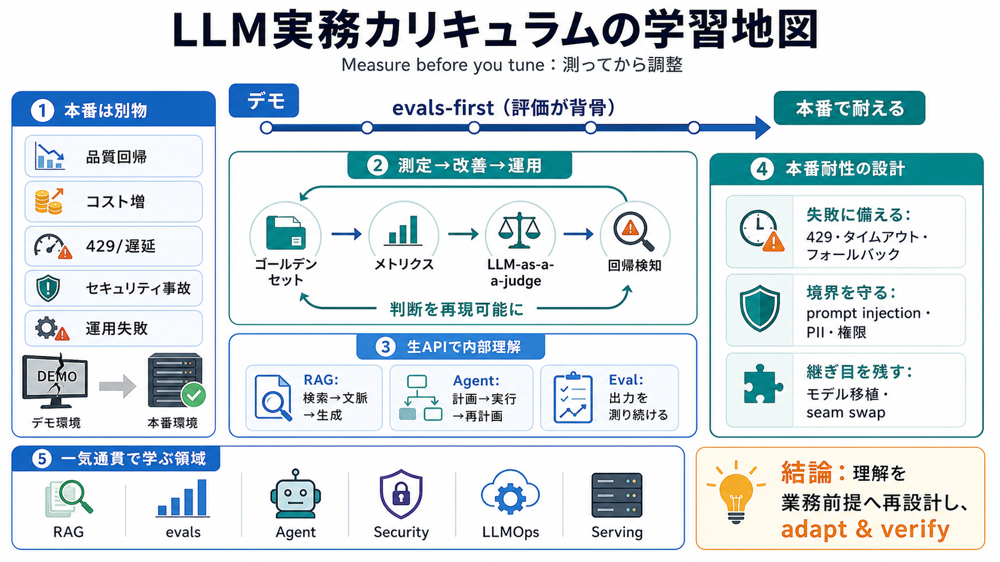

Groq API Guide 2026: Setup, Pricing, Endpoints & Code Examples
You'll receive a `429 Too Many Requests` HTTP error. The response headers include `retry-after` indicating how long to w…

デモではなく
本番の壊れ方まで
Measure before you tune
（測ってから調整）
回帰（regression）
が見えない
無駄なトークン
で膨張
prompt injection
等で崩れる
Measure before you tune
（調整より先に現状把握）
ゴールデンセット（基準データ）やメトリクス、
LLM-as-a-judgeで測る
検索→文脈注入→生成
計画→実行→再計画
出力を測り続ける
外部知識で回答を強化
品質の数値化と回帰検知
ツール利用・反復ループ
境界設計と失敗パターン対策
継続運用・監視・改善
速度・コスト・安定性の設計
依存インストール
キーはColab Secrets
data/をRAG＋evalで活用
各ノートブック末尾に演習
429 / レイテンシ / タイムアウト
フォールバック / 検証 / 回復
prompt injection
（指示の混入）
PII対策
（個人情報）
どこまでエージェントに許可するか
OpenAI / Anthropicへ
スキル移植を容易に
コピペ完全互換ではない
＝差分前提の理解が必要
基本フローは無料APIで実行
（エンドツーエンド）
LoRA / 自己ホスト型サービング
は概念＋GPUオプション
evals-firstで“変化に強い品質管理”を体験
生API中心で技術選定の土台を作る
LLM-as-a-judgeのバイアスや相関限界
無料Groqと本番SLA/スループットの差
品質を数値で追う
（evalで回帰検知）
429/タイムアウト/検証/回復
を設計に織り込む
prompt injection等への
防御をアーキテクチャで担保
You'll receive a `429 Too Many Requests` HTTP error. The response headers include `retry-after` indicating how long to w…
One caution I learned the boring way: my router’s configured Groq limits already matched Groq’s real free tier exactly. …
| groq/compound | 30 | 250 | 70,000 | — | | groq/compound-mini | 30 | 250 | 70,000 | — | | allam-2-7b | 30 | 7,000 | 6,0…
When any rate limit is exceeded, Groq returns HTTP 429 with a `retry-after` header showing how many seconds to wait. The…
Groq free tier. Every model, no credit card. Rate-limited to 30 requests per minute, 6,000 tokens per minute, and 14,400…